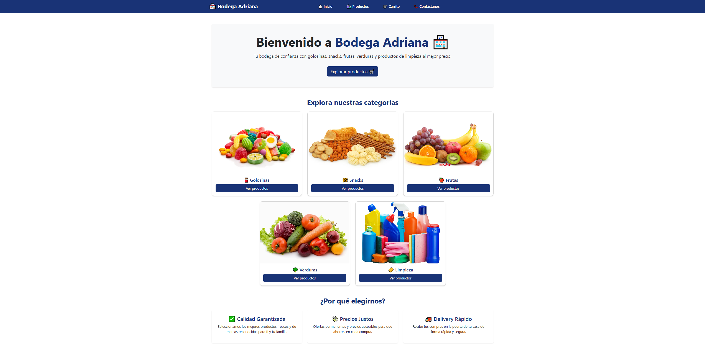

Ventas e Inventario "Bodega Adriana"
Sistema web robusto para la gestión comercial. Incluye control de stock, procesamiento de ventas en tiempo real y persistencia de datos relacionales.
Estudiante de Computación e Informática con capacidad técnica para intervenir en todas las capas de una aplicación, garantizando una integración fluida entre Frontend y Backend.
class StudentDev {
String focus = "Full Stack";
String[] stack = {
"Angular",
"Java",
"Spring Boot",
"PostgreSQL"
};
}Estudiante de programación de la carrera de Computación e Informática con una buena base técnica en el ciclo de vida completo de aplicaciones web, especializado en la integración de soluciones para Frontend y para Backend.
Cuento con la capacidad para desarrollar lógica de servidor en lenguajes como Java, C# y Python, además de gestionar la persistencia de datos en MySQL y PostgreSQL. Destaco por el uso estratégico de herramientas de IA para la optimización de código y aprendizaje continuo.
Intervención en todas las capas de una aplicación, garantizando integración fluida entre Frontend y Backend.
Dominio en HTML5, CSS3 y JS. Uso de React y Vite para la creación de componentes reutilizables.
Dominio en Java, C# y Python. Uso de Spring Boot y .NET para la creación de componentes reutilizables.
Diseño detallado de esquemas relacionales (DER). Administración sólida en MySQL, PostgreSQL y MongoDB.
Manejo de entornos con Docker y configuración de máquinas virtuales (VMware) para portabilidad.
Integración estratégica de herramientas de IA para la auditoría de sintaxis, refactorización y aceleración del ciclo de investigación técnica.
Sistema web robusto para la gestión comercial. Incluye control de stock, procesamiento de ventas en tiempo real y persistencia de datos relacionales.
Aplicación administrativa para el control de material bibliográfico y validación de registros. Optimizado para una gestión rápida y segura.
App nativa para Android que permite el mantenimiento de inventarios desde dispositivos móviles con una interfaz fluida basada en Material Design.
Aplicación móvil enfocada en la experiencia de usuario para el registro y seguimiento de órdenes de venta con transferencia segura de datos.
Disponible para oportunidades de prácticas o proyectos freelance.